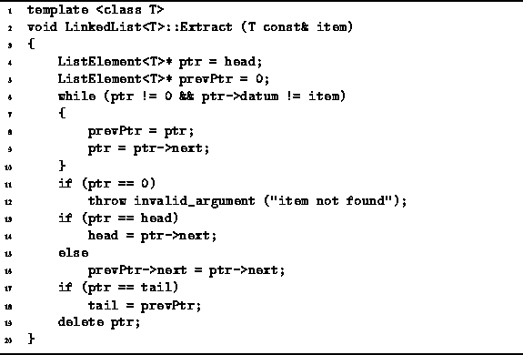
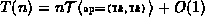
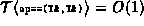
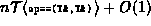
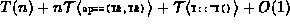
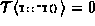

Data Structures and Algorithms
with Object-Oriented Design Patterns in C++
Data Structures and Algorithms
with Object-Oriented Design Patterns in C++In this section we consider the Extract member function of the LinkedList<T> class. The purpose of this function is to delete the specified element from the linked list.

Program: LinkedList<T> Class Extract Function Definition
The element to be deleted is identified by its value. The Extract function searches sequentially for the item to be deleted. In the absence of any a priori knowledge, we do not know in which list element the item to be deleted will be found. In fact, the specified item may not even appear in the list!
If we assume that the item to be deleted is in the list, and if we assume that there is an equal probability of finding it in each of the possible positions, then on average we will need to search half way through the list before the item to be deleted is found. In the worst case, the item will be found at the tail--assuming it is in the list.
If the item to be deleted does not appear in the list,
the algorithm shown in Program  throws
a domainerror exception.
A simpler alternative might be to do nothing--after all, if the item to be deleted is not in the list,
then we are already done!
However, attempting to delete an item which is not there,
is more likely to indicate a logic error in the programming.
It is for this reason that an exception is thrown.
throws
a domainerror exception.
A simpler alternative might be to do nothing--after all, if the item to be deleted is not in the list,
then we are already done!
However, attempting to delete an item which is not there,
is more likely to indicate a logic error in the programming.
It is for this reason that an exception is thrown.
In order to determine the running time of the Extract function,
we first need to determine the time to find the element to be deleted.
And to determine that, we need to know the running time for the
comparison on line 8.
Unfortunately, since LinkedList<T> is a generic class,
we don't know in general what the running time of the comparison will be.
So we need to introduce yet another variable to represent this unknown.
Let  be the time required to determine if two objects
of type T are equal.
be the time required to determine if two objects
of type T are equal.
If the item to be deleted is not in the list,
then the running time of Program
up to the point where it throws the exception (line 12)
is ,
which simplifies to T(n)=O(n) if .
Now consider what happens if the item to be deleted is found in the list. In the worst-case the item to be deleted is at the tail. Thus, the running time to find the element is  in the worst case. Actually deleting the element from the list once it has been found is a short sequence of relatively straight-forward pointer manipulations. These manipulations can be done in constant time. Finally, the list element, having been unlinked from the list, is returned to the free store. So, the total running time is . For a built-in type, and , which gives the running time T(n)=O(n).
 Copyright © 1997 by Bruno R. Preiss, P.Eng. All rights reserved.
Copyright © 1997 by Bruno R. Preiss, P.Eng. All rights reserved.